図解：象徴主義
象徴主義の成立と広がり
- 19世紀半ば
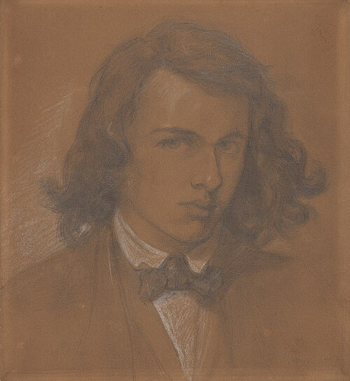
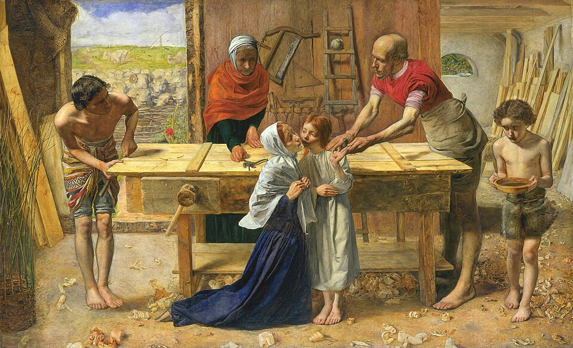
先駆けの詩と絵画ボードレールの観察
ラファエル前派の細密描写 - 1864〜
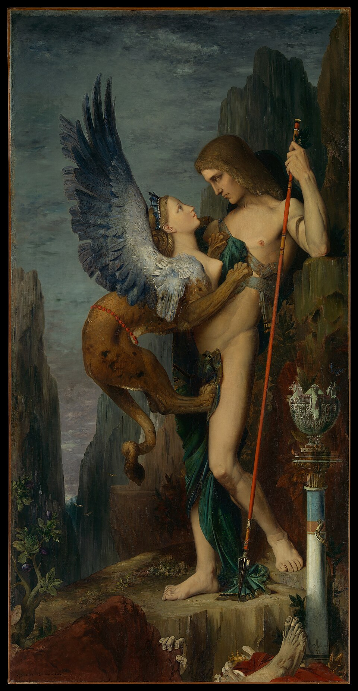
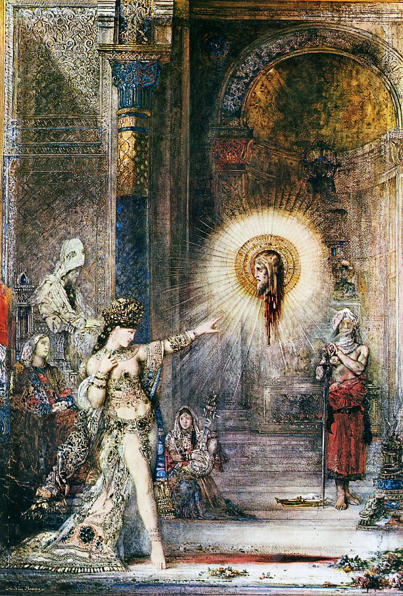
モローのファム・ファタル謎めいた女性像
宙に浮かぶヨハネの首 - 1886〜
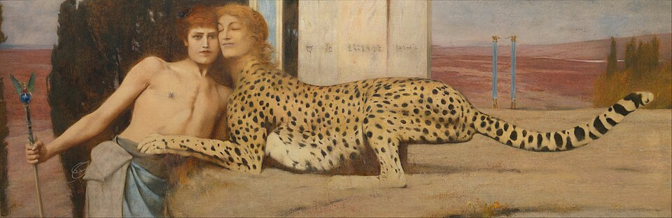
 宣言と各国への広がりモレアスが運動を定義
宣言と各国への広がりモレアスが運動を定義
クノップフ、ムンクらへ - 1890年代〜

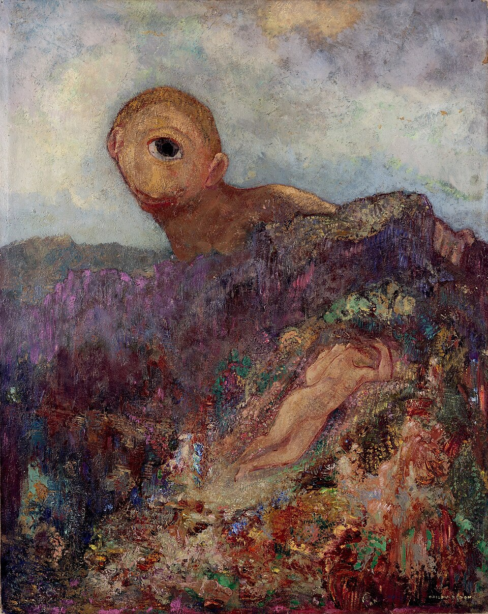
ルドンの夢の世界色鮮やかな想像の生物
シュルレアリスムの先駆者
伝統・レアリスムと何が違うか
感情・愛・死象徴伝統の約束事自らの心の幻想言葉借り物の美しい言葉自らの感性の言葉オイディプス勝利する英雄誘惑に耐える英雄
アングルとモローサロメ盆に載った首宙に浮かぶ首
図版の出典
- 《自画像》ダンテ・ゲイブリエル・ロセッティ、1847年、ナショナル・ポートレート・ギャラリー（ロンドン）：出典（Public domain）
- 《両親の家のキリスト（大工の仕事場）》ジョン・エヴァレット・ミレイ：出典（Public domain（PD-Art／PDM））
- 《オイディプスとスフィンクス》ギュスターヴ・モロー：出典（CC0 1.0）
- 《出現》ギュスターヴ・モロー：出典（Public domain（PD-Art／PDM））
- 《愛撫》フェルナン・クノップフ：出典（Public domain（PD-Art／PDM））
- 《叫び（1893年、ノルウェー国立美術館版）》エドヴァルド・ムンク：出典（Public domain（PD-Art／PDM））
- 《自画像》オディロン・ルドン、1877年頃：出典（Public domain）
- 《キュクロプス》オディロン・ルドン：出典（Public domain（PD-Art／PDM））
重要人物
象徴主義の詩人・作家
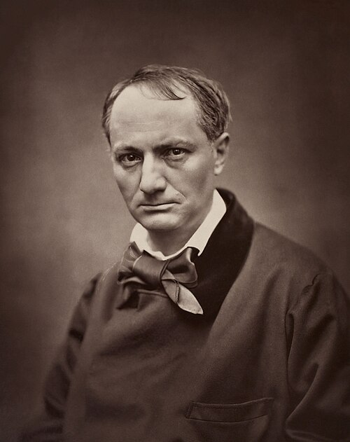
シャルル・ボードレール詩人・美術評論家『悪の華』で時間の残酷さを表す。象徴主義文学の先駆者- ジャン・モレアス詩人1886年、『フィガロ』に「象徴主義宣言」を寄稿
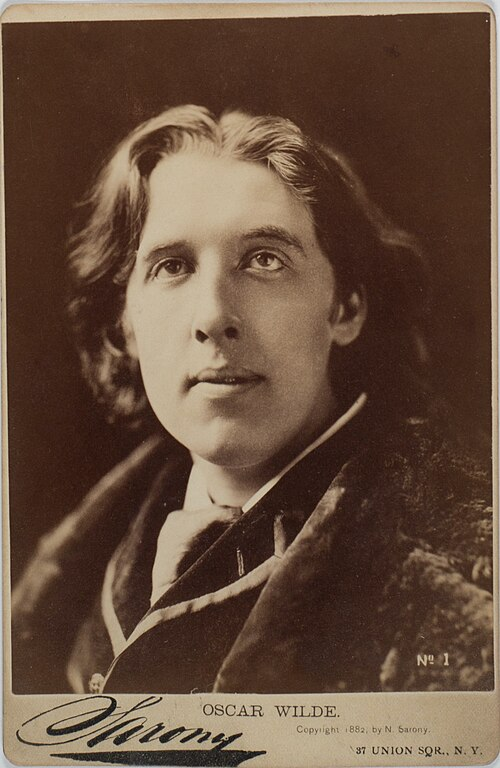
オスカー・ワイルド作家戯曲『サロメ』でファム・ファタルの典型をつくる
絵画の先駆け
- ダンテ・ゲイブリエル・ロセッティ画家ラファエル前派。ファム・ファタルを主題にする
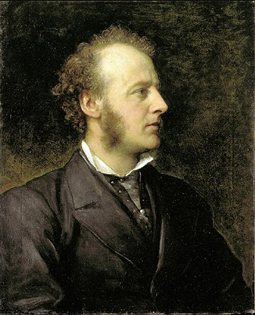
ジョン・エヴァレット・ミレイ画家《両親の家のキリスト》の各部に寓意を込める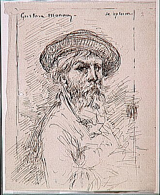
ギュスターヴ・モローフランスの画家フランス象徴主義絵画の先駆者。魅惑的な女性像を描く
各国の象徴主義
- フェルナン・クノップフベルギーの画家モローの影響を受け、《愛撫》で独自のスフィンクスを描く
- フランツ・フォン・シュトゥックドイツの画家ファム・ファタルを描く
- グスタフ・クリムト画家オーストリアでファム・ファタルを描く
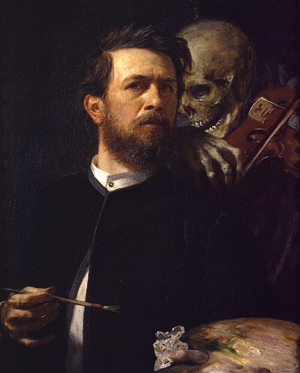
アルノルト・ベックリンスイスの画家《死の島》で避けられない死を主題にする- エドヴァルド・ムンクノルウェーの画家姉の死を《病める子》に描く。《叫び》で不安を表す
 ジェームズ・アンソールベルギーの画家人々の偽善を重ねた仮面を描く
ジェームズ・アンソールベルギーの画家人々の偽善を重ねた仮面を描く- オディロン・ルドンフランスの画家夢のような世界を描く孤高の画家。シュルレアリスムの先駆者
時代の背景
肖像・図版の出典
- シャルル・ボードレールの写真、エティエンヌ・カルジャ撮影、1862年頃：出典（Public domain）
- オスカー・ワイルドの写真、ナポレオン・サロニー撮影、1882年：出典（Public domain）
- 《自画像》ダンテ・ゲイブリエル・ロセッティ、1847年、ナショナル・ポートレート・ギャラリー（ロンドン）：出典（Public domain）
- 《ジョン・エヴァレット・ミレイの肖像》ジョージ・フレデリック・ワッツ、1871年、ナショナル・ポートレート・ギャラリー（ロンドン）：出典（Public domain）
- 《自画像》ギュスターヴ・モロー、素描、ギュスターヴ・モロー美術館：出典（Public domain）
- 《ヴァイオリンを弾く死神のいる自画像》アルノルト・ベックリン、1872年、ベルリン旧国立美術館：出典（Public domain）
- 《仮面の中の自画像》ジェームズ・アンソール：出典（Public domain（PD-Art／PDM））
- 《自画像》オディロン・ルドン、1877年頃：出典（Public domain）
象徴主義とは
目に見えないものを描く
動画 1:49～19世紀後半に現れた象徴主義は、目に見えないものを描こうとする芸術潮流です。喜びや悲しみといった感情、愛や死といった概念を、目に見えるものへ置き換えて表現する姿勢は、世紀末にかけて西洋全体へ広がりました。
ヴィーナスを美の象徴として描くなど、宗教画や寓意画、アカデミーの伝統にも象徴表現はあります。ただし、それらは愛や富をこう表すという約束事に従うものでした。本来、愛などの感じ方は一人ひとり異なります。象徴主義の画家は、伝統や約束事に縛られず、自らの心に浮かぶ幻想的な世界を絵にしたのです。
 画像を拡大 ＋
画像を拡大 ＋
《ヴィーナスの誕生》
- 作者
- サンドロ・ボッティチェリ
- 制作時期
- 1485年頃
- 所蔵
- ウフィツィ美術館
- 素材・形式
- 絵画
出典・画像について
モレアスの象徴主義宣言
動画 2:55～この運動を定義したのは、ギリシャ生まれの詩人ジャン・モレアスです。1886年、日刊紙『フィガロ』へ「象徴主義宣言」を寄稿しました。そこでは教訓、美辞麗句、虚偽の感覚、主観を交えない叙述に対抗し、理念に感性的な形態をまとわせることが探求されています。もっともらしい言葉に潜む欺瞞を退け、自らの感性によって表現するという考えです。
文学と先駆者たち
レアリスムから象徴主義へ
動画 3:34～モレアスは、詩人で美術評論家でもあったシャルル・ボードレールを象徴主義文学の先駆者に挙げました。ボードレールは、目に見えるものを描くレアリスムのクールベとも交流しています。目に見えないものを描く象徴主義とは反対に思えますが、レアリスムの行き着く先が象徴主義だったと捉えると、そのつながりが見えてきます。
美しい都市の背後を観察する
動画 4:14～19世紀半ばのフランスでは、ナポレオン三世とセーヌ県知事オスマンによるパリの大改造が進みました。産業革命による物質的な豊かさと整った街並みは、強国フランスを印象付けます。一方、その美しい都市には、大衆になじめず孤立する人々もいました。一見平和な国際情勢の水面下には、植民地を奪い合う緊張もありました。
ボードレールは街を細かく観察し、表面には見えない醜悪さや残酷さに関心を寄せました。目に見えるものを信じて見つめた結果、その背後にある嘘や欺瞞に気付いたのです。そこから、借り物の表現ではなく、自らの感性で理念を形にするという姿勢へ進んでいきました。
『悪の華』と時間の残酷さ
動画 5:10～ボードレールの『悪の華』には、恋人と過ごす美しい夏の朝に、腐った死骸を見つける詩があります。心地よい風景の中へおぞましい死骸が現れ、さらに、美しい恋人も死後は同じようになるという呼び掛けへ進みます。結びでは、腐敗していく肉体と、詩人が保ち続ける愛の形や本質とが対置されます。
ここでの主題は残酷な時間の推移です。目に見えない時間を、目に見える腐敗によって表しています。途中には死骸や湧き出る蛆虫が細かく描写され、その観察が時間の残酷さや尊さをいっそう強く伝えます。細かく観察したからこそ、それまで見えていなかったものが見えてくるのです。
それ以前の詩には、美しいものを美しい言葉で綴り、永遠の美をうたうものが多くありました。象徴主義の立場からすれば、表面しか捉えない借り物の言葉より、自らの感性に従った主観的な言葉の方が真実へ迫ります。破滅や死、人間の内面がしばしば主題となるのも、そこには嘘や偽善が入り込む余地がないと考えられるからでしょう。
ラファエル前派とのつながり
動画 7:28～絵画における象徴主義の先駆けとして、ラファエル前派が挙げられます。ロセッティがファム・ファタルを主題としたことに加え、宗教画での自然観察に基づく細密描写も、その理由です。ミレイの《両親の家のキリスト》では、独自の感性によって各部に寓意が込められています。
年齢に応じた風貌のマリアや、ごみの散らばる大工の仕事場は、従来の宗教画に従わず、「酔っ払いのマリア」を描いたとも酷評されました。しかし、マリアは必ず若々しく、ヨセフの仕事場は常に清潔でなければならないのでしょうか。伝統を盾にする理想主義を綺麗事と捉えれば、この作品も理念に感性的な形態を与えた表現といえます。文学から始まった象徴主義は、印象派が活躍する一方で、フランスとベルギーを中心に各国へ広がっていきました。

《両親の家のキリスト（大工の仕事場）》
- 作者
- ジョン・エヴァレット・ミレイ
- 制作時期
- 1849～1850年
- 所蔵
- テート・ブリテン
- 素材・形式
- 絵画
出典・画像について
CommonsのPD-Art表示に基づく画像。Tateによる英国での複製権主張の注意書きはCommons出典ページに記載。
画像出典：John Everett Millais
Public domain（PD-Art／PDM）
作品情報：作品・画像・利用条件
魔性の女性像
モローとファム・ファタル
動画 8:52～フランス象徴主義絵画の先駆者とされるギュスターヴ・モローは、ロマン主義のドラクロワやシャセリオーの影響を受け、独自の幻想的な作風を確立しました。主に取り上げたのは、19世紀末に流行したファム・ファタルです。フランス語で「運命的な女性」を意味しますが、ここでは魅惑的な姿で男性の運命を狂わせ、破滅へ追いやる女性を指します。ロセッティも、モリスの妻ジェインに恋をし、彼女をモデルに謎めいた女性像を描いていました。
女性観が変わる時代
動画 9:40～この主題の流行には、19世紀半ばからの女性の権利を求める運動が関わります。1870年のルイ＝ナポレオン政権崩壊後には、ジャーナリストのレオン・リシェらが、女性の不当な扱いからの解放を求めました。それ以前にも声はありましたが、その都度かき消されていました。世紀末から西洋全体に広がるこの運動は、第一波フェミニズムとも呼ばれます。
男性が働いて富を得て、女性が従属するという家父長制の道徳観は疑われるようになります。従来の女性観が崩れる中、女性そのものが謎めいた存在として捉えられました。象徴主義美術では、その女性が男性を誘惑し、破滅へ導くものとして描かれたのです。
《オイディプスとスフィンクス》の比較
動画 10:30～1864年のモローの出世作《オイディプスとスフィンクス》には、スフィンクスを通じて女性の謎めいた性質が表されています。ギリシャ神話のスフィンクスは、人間に「朝は四本足、昼は二本足、夜は三本足になるものは何か」と問い、答えられない者を食べる怪物です。オイディプスが謎を解くと、スフィンクスは屈辱から深淵へ身を投げたとされます。

《オイディプスとスフィンクス》
- 作者
- ギュスターヴ・モロー
- 制作時期
- 1864年
- 所蔵
- メトロポリタン美術館
- 素材・形式
- 絵画
出典・画像について
作品情報：作品・画像・利用条件
新古典主義のアングルも同じ主題を描きました。その作品では、謎を解くオイディプスの男性らしさと力強さが示され、勝利の感覚が漂います。一方、モローでは、筋肉質ながら細身のオイディプスへスフィンクスが誘惑するように近付きます。英雄はその謎めいた眼差しにじっと耐えているようです。自由帝政期に描かれたこの作品は賛否を呼びながら、ナポレオン三世の従弟ナポレオン公に買い上げられました。

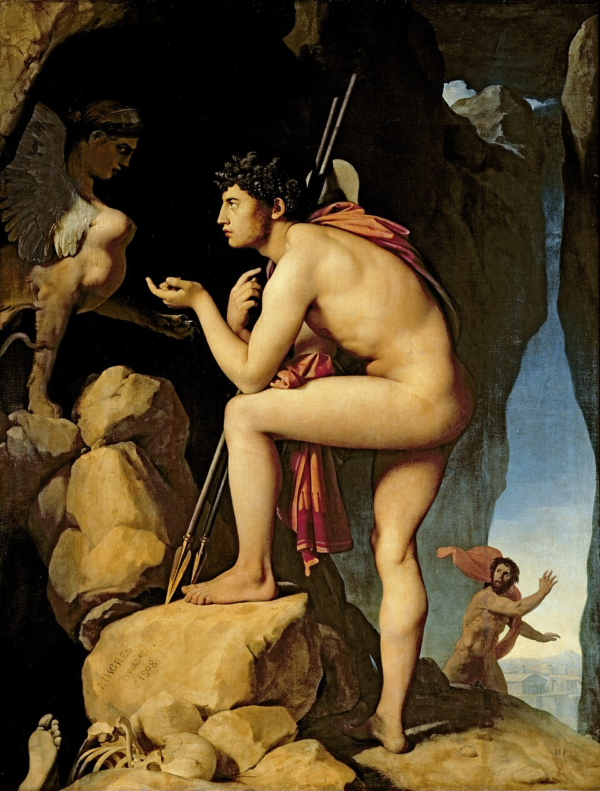
画像を拡大 ＋《スフィンクスの謎を解くオイディプス》
- 作者
- ジャン＝オーギュスト＝ドミニク・アングル
- 制作時期
- 1808年（1827年に拡張・加筆）
- 所蔵
- ルーヴル美術館
- 素材・形式
- 絵画
出典・画像について
サロメの物語と伝統表現
動画 11:28～1870年代、モローはサロメを多く描くようになります。『ユダヤ古代誌』に登場するサロメは、洗礼者ヨハネの首を求めたとされる女性です。母ヘロディアはユダヤの王ヘロデと再婚しており、再婚をユダヤ律法に反すると批判するヨハネを恨んでいました。そこで、連れ子のサロメをそそのかし、舞踏で客を喜ばせた褒美としてヨハネの首を求めさせたという物語です。殺害を企んだのは母で、サロメは利用されたことになります。
バロック期にもサロメは描かれましたが、その背景は簡略化され、盆に載ったヨハネの首を持つ姿が伝統表現となりました。その結果、サロメ自身が殺害の首謀者であり、異常な女性でもあるというイメージが定着することがありました。
宙に浮かぶヨハネの首
動画 12:12～科学の時代を経て描かれることの少なくなったサロメを、モローはオリエント風の画風で再び取り上げました。《出現》では、舞踏の後の褒美となるはずの生首が、宙に浮かび上がります。それまでの伝統とは異なる幻想的な描写は、フランスのサロン、翌年のイギリスでの公開を通じ、大きな話題を呼びました。

《出現》
- 作者
- ギュスターヴ・モロー
- 制作時期
- 1876年
- 所蔵
- オルセー美術館
- 素材・形式
- 絵画
出典・画像について
ワイルドが描いた魔性の女性
動画 12:34～モローのサロメ像に影響を受けたのが、イギリスの作家オスカー・ワイルドです。戯曲『サロメ』では、サロメはヨハネに恋をして誘惑しますが、相手にされません。業を煮やした彼女は、自分を欲望の目で見るヘロデ王の前で踊り、褒美にヨハネの首を要求します。そして運ばれた首を前に狂喜し、唇へ口付けするのです。

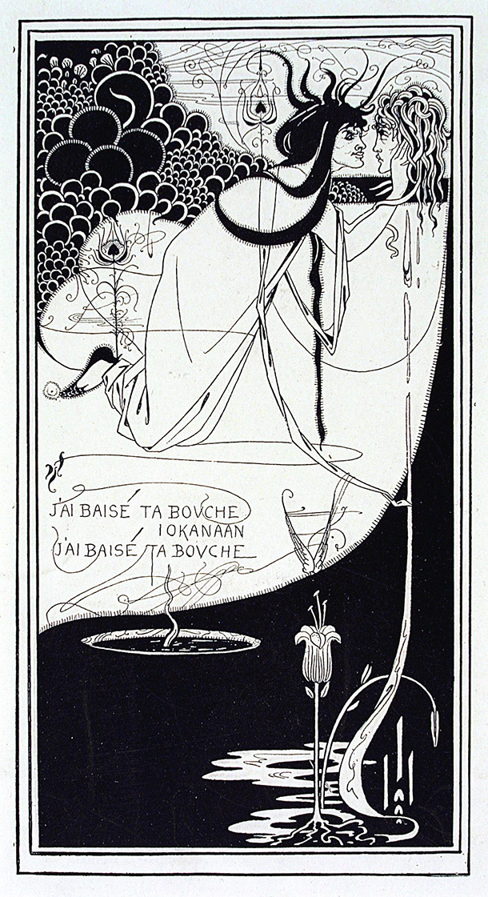
画像を拡大 ＋《ヨカナーン、お前の口に接吻した（《クライマックス》初期版）》
- 作者
- オーブリー・ビアズリー
- 制作時期
- 1893年
- 所蔵
- 所蔵個体未確認（画像出典：ヴィクトリア＆アルバート博物館経由Commons）
- 素材・形式
- 版画・挿絵
出典・画像について
動画表示は1894年。画面の文字入り図柄は1893年の初期版であり、後の文字なし版と区別。所蔵個体は未確定。
画像出典：Aubrey Beardsley
Public domain（PD-Art／PDM）
作品情報：作品・画像・利用条件
こうしてサロメはファム・ファタルの典型となり、破滅や魔性を象徴する女性像として西洋へ広まりました。モローの魅惑的な女性像は、19世紀末から20世紀初頭に流行する主題の先駆けといえます。
ベルギー象徴主義とクノップフ
動画 13:21～モローの影響を強く受けた画家に、ベルギー象徴主義のフェルナン・クノップフがいます。1880年代以降のベルギーでは、レ・ヴァン（二十人会）などを通じ、フランスの前衛的な芸術を取り入れる動きが盛んでした。アール・ヌーヴォー建築でもフランスに先んじて展開し、新印象主義の技法を使う画家もいました。
代表作《愛撫》は、オイディプスとスフィンクスを思わせる構図です。ただし、伝承通りの怪物を描いたモローと異なり、独自のスフィンクスが現れます。双方とも妹マルグリットをモデルにしたといわれ、オイディプスの中性的な姿と、スフィンクスの恍惚とした表情が、神秘的な世界を作ります。伝承に縛られない、自分だけの主題の表現なのです。

《愛撫》
- 作者
- フェルナン・クノップフ
- 制作時期
- 1896年
- 所蔵
- ベルギー王立美術館
- 素材・形式
- 絵画
出典・画像について
男性の運命を左右する存在
動画 14:21～ドイツのフランツ・フォン・シュトゥック、オーストリアのグスタフ・クリムトもファム・ファタルを描きました。女性解放運動などを背景とするこの女性像には、男性が女性に対して主導権を握る従来の関係とは逆に、男性の運命を左右する女性の強さも象徴されているといえるでしょう。

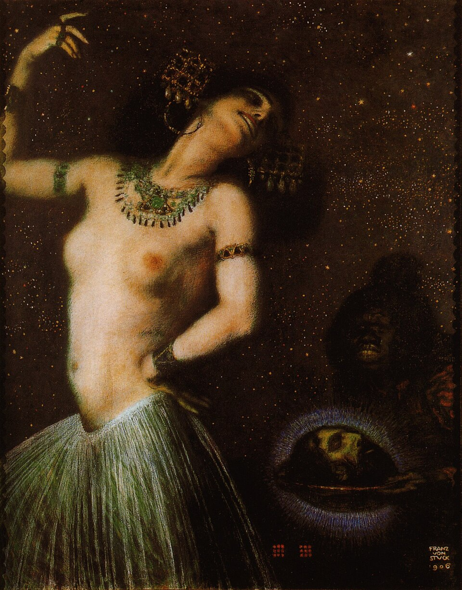
画像を拡大 ＋《サロメ》
- 作者
- フランツ・フォン・シュトゥック
- 制作時期
- 1906年
- 所蔵
- レンバッハハウス美術館、ミュンヘン
- 素材・形式
- 絵画
出典・画像について
 画像を拡大 ＋
画像を拡大 ＋
《ユディトI（ホロフェルネスの首を持つユディト）》
- 作者
- グスタフ・クリムト
- 制作時期
- 1901年
- 所蔵
- ベルヴェデーレ美術館、ウィーン
- 素材・形式
- 絵画
出典・画像について
不安と死の表現
ベックリンと死の島
動画 14:46～象徴主義の画家が好んだもう一つの主題は、不安や死です。スイスのアルノルト・ベックリンは、印象主義の全盛期にも戸外ではなく室内で空想的な風景を制作しました。大画面に小さな人間を置く構図には、ドイツ・ロマン主義のフリードリヒの影響があります。フリードリヒは大自然の中のちっぽけな人間を通じ、自然の神秘性を表そうとしました。
《死の島》の船には、操船する人物と、その前に立つ白い衣に覆われた人物がいて、さらに前方には棺のようなものが置かれています。向かう先は死の深淵です。ベックリンの十四人の子のうち五人が幼少期に、さらに三人が本人より先に亡くなった経験も、避けられない死を主題とする背景と無関係ではないでしょう。対照的に明るい《生の島》も、生と死に深く向き合った結果と考えられます。

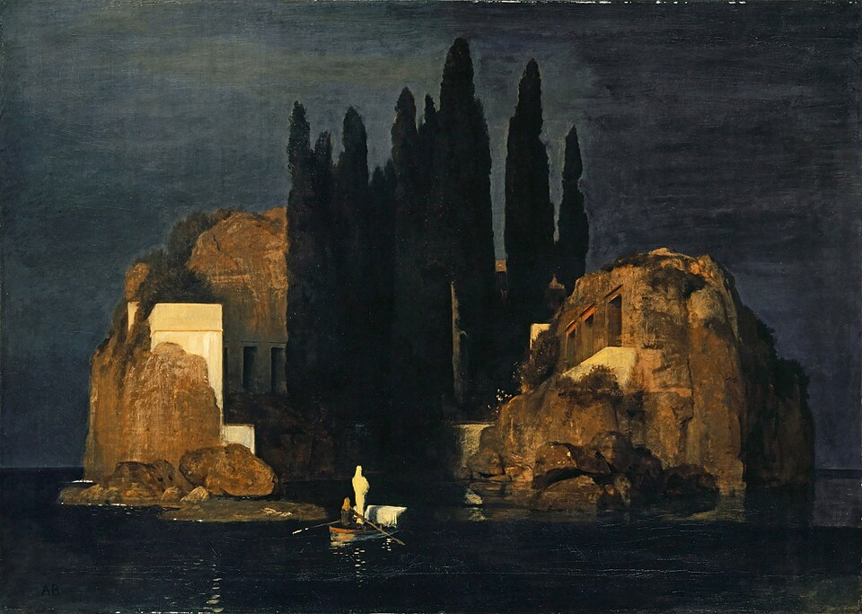
画像を拡大 ＋《死の島（第一作）》
- 作者
- アルノルト・ベックリン
- 制作時期
- 1880年
- 所蔵
- バーゼル美術館
- 素材・形式
- 絵画
出典・画像について

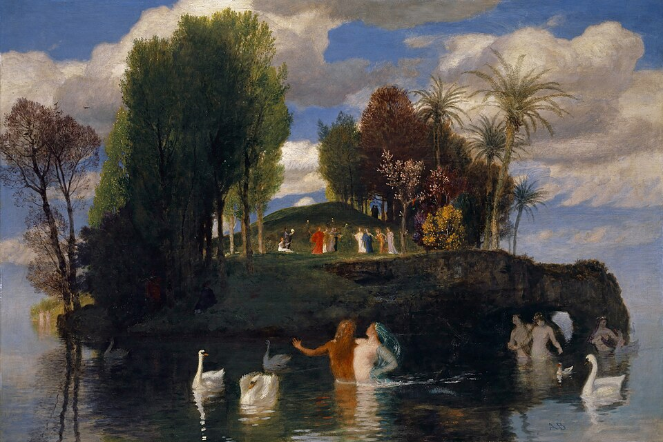
画像を拡大 ＋《生の島》
- 作者
- アルノルト・ベックリン
- 制作時期
- 1888年
- 所蔵
- バーゼル美術館
- 素材・形式
- 絵画
出典・画像について
ムンクと《病める子》
動画 15:54～ノルウェーのエドヴァルド・ムンクも、五歳で母を、十四歳で姉を亡くす経験を作品へ反映しました。自国の絵画学校に在籍していた頃から取り組んだ《病める子》は、姉の死の記憶と、自分だけが生き残った絶望や罪悪感を表します。同じ構図で四十年以上にわたり六作品を描いたことからも、その出来事が人生へ与えた影響の大きさが分かります。

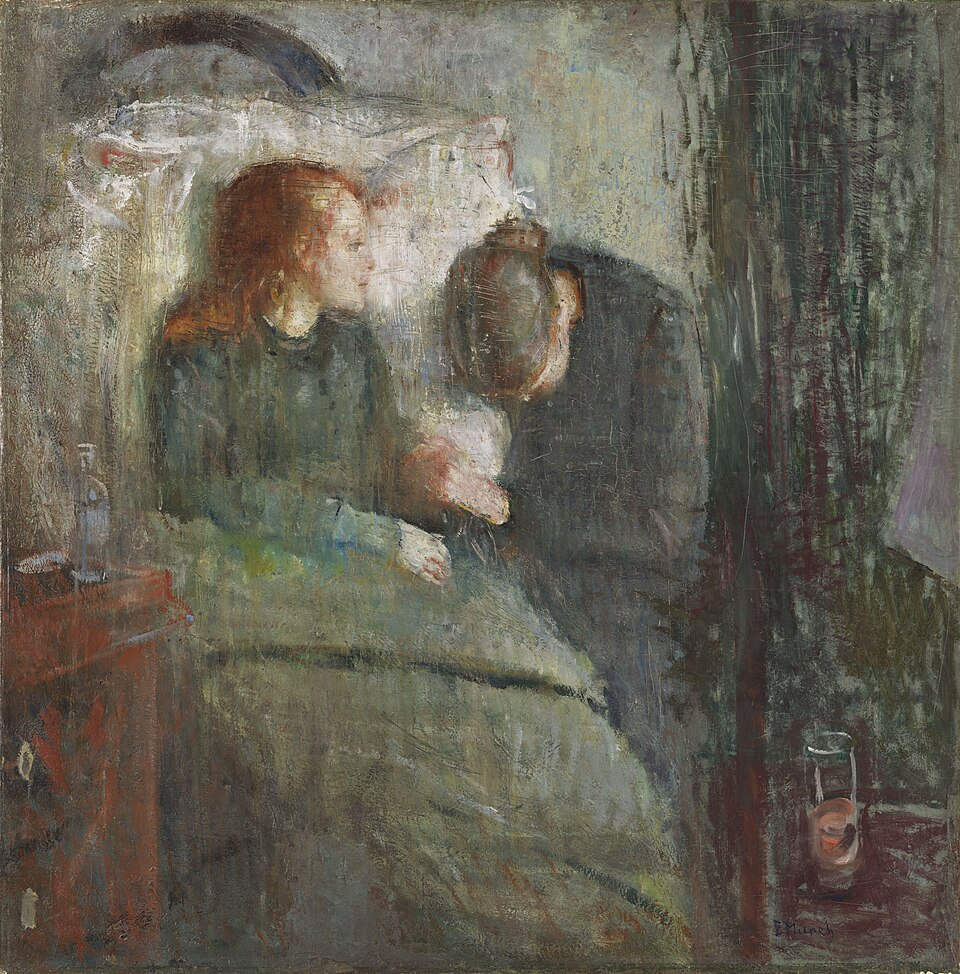
画像を拡大 ＋《病める子供（第一作）》
- 作者
- エドヴァルド・ムンク
- 制作時期
- 1885～1886年
- 所蔵
- ノルウェー国立美術館、オスロ
- 素材・形式
- 絵画
出典・画像について
複数の制作版があるため、画面に対応する初期の版を表示。
画像出典：National Museum of Art, Architecture and Design（画像提供）／エドヴァルド・ムンク（作品）
CC BY 4.0（デジタル複製画像。原作品はPublic domain）
作品情報：作品・画像・利用条件
《叫び》と生命のフリーズ
動画 16:22～パリへの遊学では、新印象主義の技法や、ゴッホなどのポスト印象主義の影響も受けました。帰国後には独自の様式を確立し、《叫び》を含む「生命のフリーズ」と題した連作を描きます。血のように赤い背景の中、中心の人物は、自然を貫く激しい叫びに不安を感じ、耳を塞いでいます。自分が叫んでいるというより、突然襲う得体の知れない不安に震える姿です。

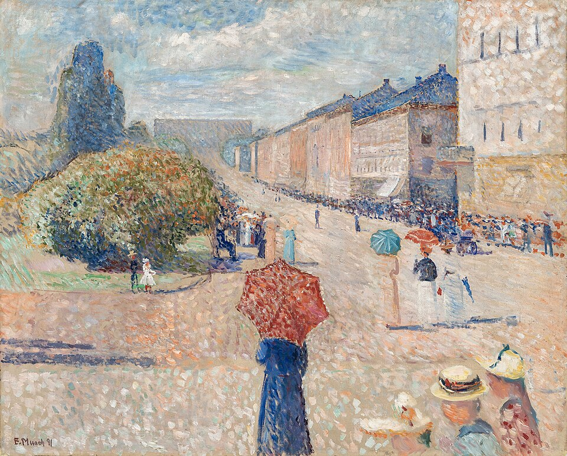
画像を拡大 ＋《カール・ヨハンの春の日》
- 作者
- エドヴァルド・ムンク
- 制作時期
- 1890年
- 所蔵
- KODE美術館、ベルゲン
- 素材・形式
- 絵画
出典・画像について
画像を拡大 ＋
《叫び（1893年、ノルウェー国立美術館版）》
- 作者
- エドヴァルド・ムンク
- 制作時期
- 1893年
- 所蔵
- ノルウェー国立美術館、オスロ
- 素材・形式
- 絵画
出典・画像について
《叫び》の人物について
元の解説は中心人物を「自画像」と呼びます。本教材では、その断定を避けて「人物」とし、自然の叫びへの不安と、耳を塞ぐ姿についての説明を保持しています。
ムンクは孤独、不安、嫉妬なども描きました。身内の死だけでなく、強い批判を向ける社会への不満や孤独も、作品に反映されているのです。
社会への不安と人間の内面
動画 17:17～フランスではピュヴィス・ド・シャヴァンヌが貧しさを主題にした人物像を、ベルギーではジェームズ・アンソールが人々の偽善を重ねた仮面を描きました。フェリシアン・ロップスは象徴主義文学の影響から性や死、悪魔を主題とし、ドイツのマックス・クリンガーは死を中心に、絵画、彫刻、版画など幅広く制作しました。変化する社会への不安を映すかのように、作品は人間の内面へ向かっていきます。
 画像を拡大 ＋
画像を拡大 ＋
《貧しき漁夫》
- 作者
- ピエール・ピュヴィス・ド・シャヴァンヌ
- 制作時期
- 1881年
- 所蔵
- オルセー美術館
- 素材・形式
- 絵画
出典・画像について
画像を拡大 ＋
《仮面の中の自画像》
- 作者
- ジェームズ・アンソール
- 制作時期
- 1899年
- 所蔵
- メナード美術館
- 素材・形式
- 絵画
出典・画像について

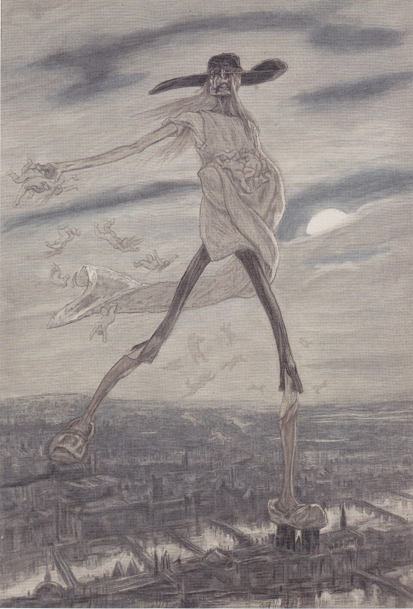
画像を拡大 ＋《毒麦をまく悪魔（連作《悪魔崇拝者たち》より）》
- 作者
- フェリシアン・ロップス
- 制作時期
- 1882年
- 所蔵
- フェリシアン・ロップス美術館、ナミュール（所蔵版）
- 素材・形式
- 版画・挿絵
出典・画像について

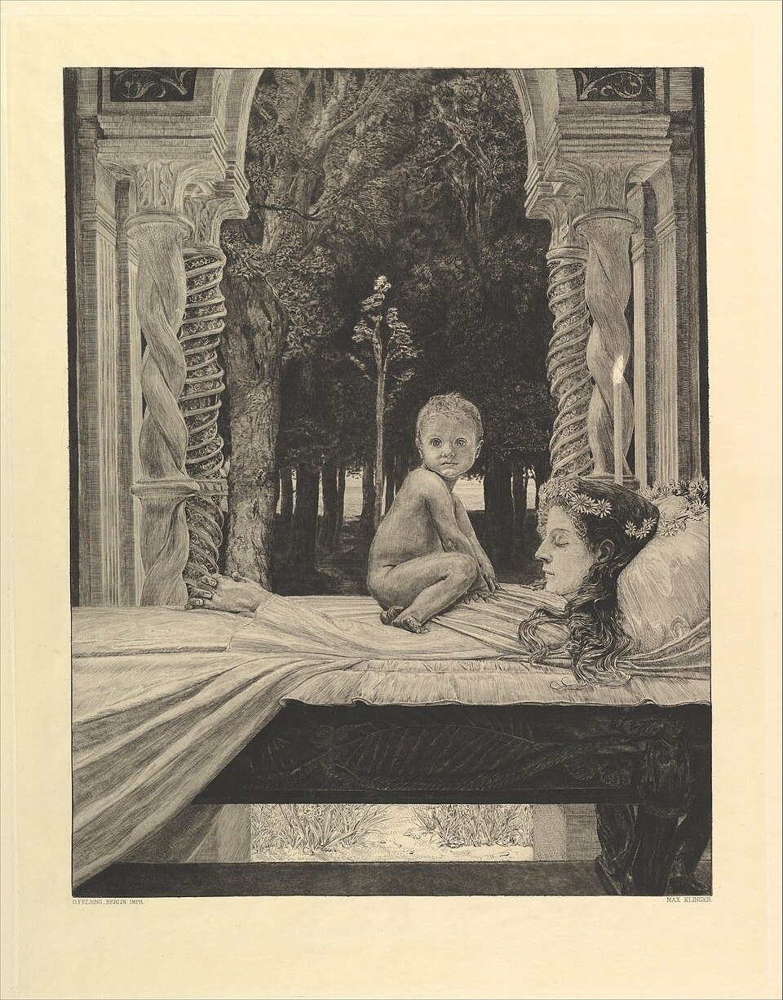
画像を拡大 ＋《死んだ母（連作《死について 第2部》より）》
- 作者
- マックス・クリンガー
- 制作時期
- 1898年（作品年。掲載刷の制作年は不詳）
- 所蔵
- メトロポリタン美術館所蔵刷（52.586.2(10)）
- 素材・形式
- 版画・挿絵
出典・画像について
ルドンとその後
ルドンの幻想世界
動画 17:52～フランス生まれのオディロン・ルドンは、象徴主義の中でも異質な存在でした。死や破滅などの主題を持つ画家が多い中、夢の中のような世界を展開します。幼少期に顕微鏡で微生物を見たことや、レアリスム全盛期に神秘的な作品を描いていたモローとの出会いが影響しています。

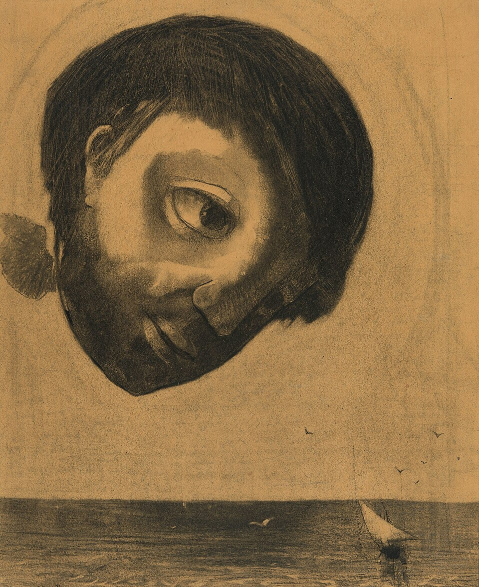
画像を拡大 ＋《水の守護神》
- 作者
- オディロン・ルドン
- 制作時期
- 1878年
- 所蔵
- シカゴ美術館
- 素材・形式
- 木炭画
出典・画像について
印象派が流行した1870～80年代にも、あえて木炭画を描き続け、1886年の最後の印象派展にも出品しました。しかし、来場者には理解されず、見る人を不安にするなどと酷評されました。1890年代にはモノクロの世界から抜け出し、色鮮やかな作品へ向かいます。内から湧くイメージによって想像上の生物を描き、実際にはあり得ない夢のような絵を実現しました。

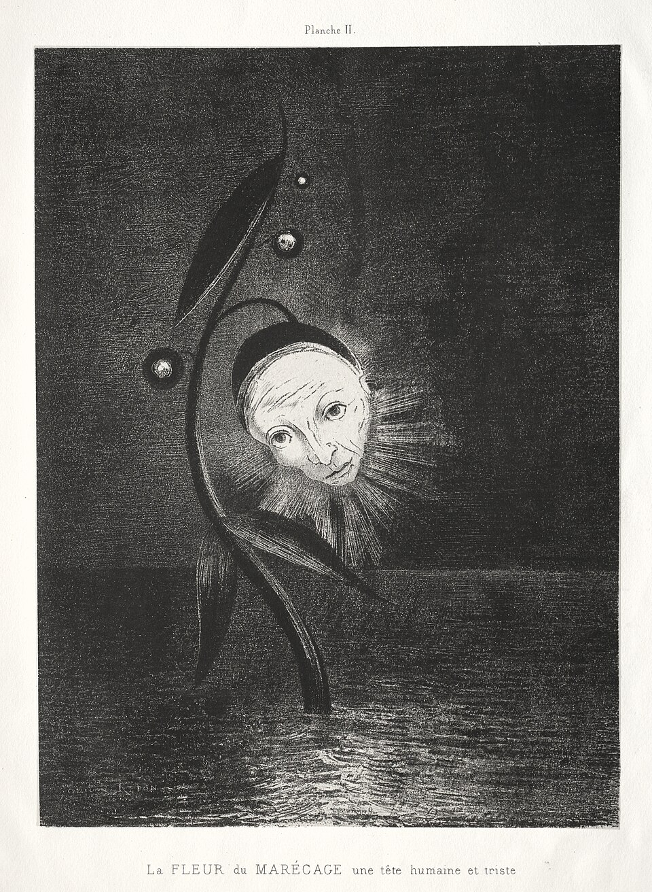
画像を拡大 ＋《沼の花、悲しげな人間の顔（《ゴヤ頌》第2図）》
- 作者
- オディロン・ルドン
- 制作時期
- 1885年
- 所蔵
- クリーヴランド美術館所蔵刷（1927.344.2）
- 素材・形式
- 版画・挿絵
出典・画像について
ルドンは、見たものを描く姿勢とは反対の制作を行い、象徴主義の中でも孤高の画家と称されることがあります。彼の「目に見えるものは目に見えないものを描くためにある」という言葉は、後の芸術の展開を予見するものでもありました。

《キュクロプス》
- 作者
- オディロン・ルドン
- 制作時期
- 1914年頃
- 所蔵
- クレラー＝ミュラー美術館
- 素材・形式
- 絵画
出典・画像について
シュルレアリスムへの接続
動画 19:11～世紀末に流行した象徴主義は、画家たちが主題にした不安が現実になるかのように、1914年の第一次世界大戦を迎えます。戦争によって西洋が分断される中、象徴主義は自然と衰退しました。しかし、ルドンを先駆者とし、その死から十数年後には、無意識を描く新たな芸術が現れます。それが超現実主義、シュルレアリスムです。
要点まとめ
- 象徴主義は19世紀後半に現れ、感情や愛・死といった目に見えないものを、目に見えるものへ置き換えて描いた芸術潮流。伝統の約束事に縛られず、自らの心に浮かぶ幻想的な世界を描いた。
- 1886年、詩人ジャン・モレアスが『フィガロ』に「象徴主義宣言」を寄稿した。先駆者とされるボードレールは『悪の華』で、見えない時間の残酷さを見える腐敗で表した。
- 絵画ではラファエル前派が先駆けとされ、ロセッティのファム・ファタル（運命の女性）やミレイの宗教画が挙げられる。象徴主義はフランスとベルギーを中心に広がった。
- フランス象徴主義の先駆者ギュスターヴ・モローは、《オイディプスとスフィンクス》やサロメを描いた《出現》でファム・ファタルを表した。背景には第一波フェミニズムによる女性観の変化がある。
- モローのサロメ像はオスカー・ワイルドの戯曲『サロメ』に影響し、サロメはファム・ファタルの典型となった。ベルギーのクノップフは《愛撫》で独自のスフィンクスを描き、シュトゥックやクリムトもファム・ファタルを描いた。
- 不安や死も主題となった。ベックリンは《死の島》を、ムンクは姉の死を描いた《病める子》や、連作「生命のフリーズ」の《叫び》を描いた。
- ピュヴィス・ド・シャヴァンヌ、仮面のアンソール、ロップス、マックス・クリンガーも人間の内面へ向かった。
- オディロン・ルドンは夢のような世界を描き、木炭画から色鮮やかな作品へ進んだ。「目に見えるものは目に見えないものを描くためにある」という言葉で知られる。
- 象徴主義は第一次世界大戦で衰退したが、ルドンを先駆者として、無意識を描くシュルレアリスム（超現実主義）が現れた。
確認問題
答えを考えてから開いてください。選択問題は選ぶとすぐ正誤と解説が出ます（選択肢の順番は開くたびに変わります）。各問題のリンクから該当の章や作品カードへ戻れます。
選択問題：0／5問回答・正解0
A. 一問一答答えを考えてから開く
問11886年に日刊紙『フィガロ』へ「象徴主義宣言」を寄稿し、この運動を定義したギリシャ生まれの詩人は誰か。
答えを見る
問2フランス語で「運命的な女性」を意味し、魅惑的な姿で男性の運命を狂わせ破滅へ追いやる女性像を指す語は何か。
答えを見る
問3「目に見えるものは目に見えないものを描くためにある」と語り、夢の中のような世界を描いた、象徴主義の孤高の画家は誰か。
答えを見る
B. 4択選ぶとすぐ正誤と解説
問4『悪の華』の作者で、モレアスが象徴主義文学の先駆者に挙げた詩人・美術評論家は誰か。
→ 本文で確認（レアリスムから象徴主義へ）
問5モローの《出現》が、それまでのサロメの伝統表現と異なる点はどれか。
→ 本文で確認（宙に浮かぶヨハネの首）
問6大画面に小さな人間を置く構図で《死の島》を描いた、スイスの画家は誰か。
→ 本文で確認（ベックリンと死の島）
C. 図版問題画像を見て答える
問7この作品の名前と作者を答えよ。この作品を含む連作の題は何か。
答えを見る
問8この作品の作者は誰か。
→ 作品カードで確認
問9この作品の作者は誰か。
→ 作品カードで確認